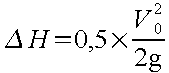
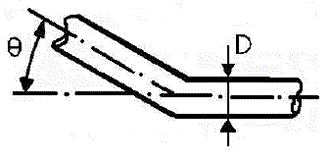

Voir exemple : Les Siphons
Le siphon désigne un tronçon plus ou moins long d'un émissaire dans lequel l'écoulement est mis en charge quelle que soit la valeur du débit. Il s'agit donc d'un dispositif dont le profil en long comporte une discontinuité constituée de l'amont vers l'aval par une partie descendante, d'une partie horizontale ou à faible pente et enfin d'une remontée.
Siphon : les siphons sont principalement utilisés en assainissement pour franchir des obstacles (rivières, voie ferrée, etc…), lorsqu'il n'est pas possible de maintenir le réseau à son niveau habituel. | ||
| --Extrait de l'Encyclopédie de l'Hydrologie Urbaine et de l'Assainissement(B. CHOCAT - Edition Lavoisier TEC&DOC) | ||
Tout siphon se compose de :
une ou plusieurs canalisations transitant différents débits,
2 dispositifs de raccordement, à l'amont et l'aval, appelés têtes de siphons et destinés à faire la transition entre le réseau en écoulement à surface libre et celui en écoulement en charge,
éventuellement un déversoir d'orage placé en amont du siphon pour permettre d'évacuer le trop plein qui ne pourrait y transiter.
Pour définir ce type de dispositifs, le concepteur rencontre bien souvent trois sortes de difficultés principales :
l'environnement dans lequel il doit l'implanter est source de problèmes pour la réalisation des travaux, et la nature de l'effluent est source de contraintes,
le calcul dimensionnel qui doit être conduit de façon à obtenir simultanément des pertes de charge faibles et des vitesses suffisantes pour éviter l'ensablement. Ces deux exigences sont évidemment contradictoires. Le compromis nécessaire s'accompagnera donc de moyens d'intervention pour permettre le bon fonctionnement et l'entretien du dispositif,
en théorie, le calcul d'un siphon se limite à un simple calcul de tuyauterie. La littérature en parle peu, alors que les contraintes à prendre en compte sont nombreuses et diverses suivant les cas d'espèces; l'importance relative du débit constitue également un élément d'appréciation. Pour toutes ces raisons, il n'est pas possible de donner des règles générales. Par contre, l'établissement de listes exhaustives des contraintes que l'on est susceptible de rencontrer permettra au concepteur de ne pas en oublier.
Les principales contraintes sont les suivantes :
la profondeur des fouilles, d'où l'importance des terrassements,
la nature des terrains,
la présence d'eau qui entraîne parfois la nécessité d'empêcher la flottation des canalisations lors des vidanges, le recours à un rideau de palplanches, au pompage,
la nécessité, parfois, d'avoir recours au fonçage des canalisations,
l'ensouillage dans le lit d'une rivière et/ou l'ancrage des canalisations: éviter la flottation ou l'entraînement par le débit de la rivière,
suivant le contexte: risques de tassements différentiels, problèmes de la tenue des liaisons entre les différents ouvrages (en particulier dans les terrains saturés d'eau), le choix de la nature des matériaux constitutifs des canalisations et en fonction de ce choix, la technique de leur mise en place,
les problèmes de protection contre la corrosion, le choix des matériaux constitutifs de la conduite ou de sa protection; dans le cas fréquent de réalisation en acier, une éventuelle protection cathodique,
la charge hydraulique, le poids des terres, les charges roulantes, qui déterminent la caractéristique des canalisations et qui interviennent dans le choix de la nature de la conduite,
les accords et autorisations des administrations ou autres entités concernées avec les sujétions supplémentaires qui peuvent les accompagner.
On peut citer :
présence de matières organiques provoquant des fermentations dans les dépôts et en conséquence l'apparition d'H2S (mauvaises odeurs), occasionnant également des corrosions,
présence de matériaux flottants, d'huiles, de graisses, de mousses qui s'accumulent dans les zones de stagnation de l'eau et en particulier dans les regards (éventuel recours aux regards avec tampons étanches),
présence de morceaux de bois de branches ou autres éléments longs qui peuvent se bloquer dans les coudes et créer l'amorce d'obstruction de la canalisation (éléments souvent difficiles à arrêter totalement par les dégrilleurs),
présence des matières en suspension de natures, densités et dimensions diverses; les plus gênantes sont les plus denses et les plus grosses, dont la stagnation est à l'origine de la formation des dépôts avec des matériaux plus fins et moins denses qui viennent s'y fixer,
la variabilité du débit dans le temps,
l'évolution des caractéristiques des canalisations avec le temps, en particulier évolution de la rugosité ou formation de dépôts qui créent un accroissement des pertes de charge (d'où l'importance d'effectuer les calculs avec un coefficient de rugosité correspondant à une conduite usagée).
Les structures utilisées, sans considérer pour l'instant les problèmes de dimensionnement ou de fonctionnement, sont constituées soit par une canalisation unique, soit par plusieurs canalisations parallèles qui sont mises en service automatiquement les unes après les autres, au fur et à mesure de l'accroissement du débit.
A ces structures de base sont parfois associés quelques-uns des organes tels que :
ouvrages d'entrée et de sortie des siphons,
dégrilleurs,
dispositifs d'arrêt et d'élimination des flottants, des huiles et des graisses,
dessableur,
regard de visite permettant le curage,
ouvrage de répartition des débits, dans le cas de siphons multitubes,
déversoir d'orage écrêtant les débits qui dépassent la débitance des siphons,
dispositifs de vidange pour curage à sec, composés par des vannes pour effectuer des chasses d'eau dans le cas de petits débits.
La préoccupation majeure porte sur Ie risque d'ensablement et ses conséquences.
Pour un siphon de ce type, on rencontrera trois physionomies de fonctionnement schématisées par les croquis ci-après :
Fonctionnement idéal - Conditions normales de calcul à Qmax :
Le siphon « tire » :
Le siphon « bourre » :
Le premier cas montre le fonctionnement idéal, dans lequel aucune modification n'est apportée à l'écoulement dans l'amont de l'émissaire.
C'est la physionomie que l'on doit chercher à respecter pour le débit maximum envisagé.
Le deuxième représente un siphon qui « tire ». Il y a abaissement de la ligne d'eau dans la partie amont de l'émissaire. Ce sera le cas lors de l'utilisation du dispositif tel que prévu en 1 quand le débit sera inférieur. L'entonnement dans le siphon peut provoquer un entraînement d'air. Pour s'en prémunir, le plus simple est de prévoir le fond de la chambre d'entrée dans le siphon à une cote nettement inférieure à celle du radier : la hauteur d'eau au-dessus de la génératrice supérieure du siphon sera égale à deux fois la valeur de v2/2g dans l'entrée du siphon (voir la modification tracée en pointillé sur le croquis).
Le dernier présente un siphon qui « bourre »; c'est le cas d'un siphon dont la perte de charge est trop élevée. On observe, par réaction de l'aval sur l'amont, une remontée de la ligne d'eau dans la partie amont de l'émissaire. Cette disposition est à éviter car, très rapidement, elle provoquerait la mise en charge de l'émissaire amont et pourrait même entraîner des débordements si la perte de charge était trop forte.
Ce type de situation, s'il ne peut être évité, conduit à envisager la mise en place d'un déversoir d'orage à l'amont de l'entrée du siphon; il aura alors pour mission d'écrêter les débits qui provoquent le « bourrage » du siphon.
Cette vue un peu théorique des choses doit être complétée par un examen plus concret: en général le siphon à réaliser se présente comme l'organe de liaison entre deux éléments d'un coIlecteur et devra transiter le débit Q entre le niveau N1 dans la tête amont et le niveau N2 dans la tête aval. Le diamètre du siphon doit donc être déterminé de façon à passer le débit Q en créant une perte de charge totale J=N1-N2. D'une part les dimensions normalisées ne correspondent en général pas à cette exigence, et d'autre part l'évolution prévisible de la rugosité avec le temps conduit à prendre un diamètre plus grand que celui rigoureusement nécessaire. Le siphon ainsi réalisé aura donc d'abord tendance à tirer (commande par l'aval); puis avec le temps cette tendance ira en diminuant, son fonctionnement se rapprochant du cas idéal.
Ce mode de réalisation présente en général un gros inconvénient: en effet, le débit à transiter varie dans de larges proportions et le siphon est évidemment calculé pour le débit maximum. Il s'en suit des vitesses faibles et donc des risques de dépôts pendant les périodes où le débit est minimum. Car le plus souvent la charge disponible est faible et ne permet pas de très grandes vitesses quand le débit est élevé.
Ces raisons ont conduit à proposer des siphons à canalisations multiples.
Comme nous l'avons déjà indiqué, le calcul d'un siphon se résume à un calcul de perte de charge dans une canalisation. Trois termes sont à considérer :
la perte de charge linéaire,
les pertes de charge à l'entrée et à la sortie du siphon, du fait du rétrécissement et de l'élargissement brusque, ainsi que celle due aux éventuels ouvrages annexes placés à l'amont (déversoirs, chutes, etc),
les pertes de charge dues aux singularités (telles que coudes) le long du siphon.
Soit un débit Q à transiter par le siphon; les vitesses en amont et en aval sont respectivement V1 et V2. La surface libre dans le collecteur amont s'établit à la cote Z1 et celle de Z2 dans le collecteur aval. La perte de charge totale pour passage dans le siphon est donc telle que : J = Z1 – Z2.
D'où une perte linéaire (1) de :
Cette égalité est donc également vérifiée pour les cotes des radiers des collecteurs d'arrivée et de départ. A cela il faut ajouter les pertes de charge d'entrée et de sortie. A l'entrée, on a un brusque rétrécissement, d'où :

De même à l'aval il y a un élargissement brusque, d'où :
V0 désignant la vitesse dans la canalisation en charge du siphon. L'expression (1) s'écrit donc :
Les hauteurs h1 et h2 se déduisent des relations :
H1 = Z1 - R1 et h2 = Z2 – R2
R1 et R2 désignant les cotes des radiers amont et aval.
Quant à l'amont, la hauteur d'eau est inférieure au niveau normal, l'eau a une vitesse plus grande et il y a abaissement de la ligne d'eau supérieure pour tendre asymptotiquement vers la ligne d'eau normale. On se trouve dans le cas d'un siphon qui tire. C'est le cas notamment pour les débits inférieurs au débit Q nominal pour lequel le siphon est dimensionné, ou lorsque la cote du radier amont est implantée trop haut.
Quand la hauteur d'eau à l'amont est supérieure à la ligne normale, il y a risque de mise en charge du réseau amont. C'est le cas d'une canalisation sous dimensionnée ou d'un radier placé trop bas. Il faut donc dans ce cas prévoir un déversoir de délestage en tête du siphon.
Elle est calculée en utilisant la formule de Chézy :

|
C |
coefficient de résistance selon Chézy |
|
Rh |
rayon hydraulique en m |
|
I |
pente du radier en m/m |
|
V |
vitesse en m/s |
où C est donné par diverses formules dont les plus utilisées sont les suivantes :
|
Manning-Strickler |
|
Ks coefficient de Strickler caractérisant la rugosité des parois, |
|
Bazin |
|
γ coefficient caractérisant la rugosité des parois. |
Tableau 2.3. Calcul des pertes de charge linéaires
Les pertes de charge correspondant au rétrécissement brusque à l'entrée et à l'élargissement brusque à la sortie du siphon s'expriment respectivement par les formules suivantes :
|
perte de charge à l'entrée |
 |
|
perte de charge à la sortie |
|
Tableau 2.4. Calcul des pertes de charge aux extrémités
Les pertes de charge singulières sont exprimées sous la forme KV2/2g, la valeur propre de K étant donnée pour chaque cas particulier dans les manuels. Ici nous indiquons cette valeur pour les coudes très ouverts et arrondis qui sont en général rencontrés dans les siphons.
Les formules de Weisbach donnent pour les coudes arrondis :

|
α |
Angle du coude en degrés sexagésimaux |
|
D |
Diamètre de la conduite en mm |
|
ρ |
Rayon du coude en mm |
α, D et ρ sont présentés sur la figure suivante :

Les formules de Weisbach donnent pour les coudes à angle vif :

Voir θ paramètre présenté sur la figure suivante.

Hydrouti effectue la somme de ces pertes de charge évaluées pour le débit maximum et les compare à la dénivelée disponible entre l'entrée et la sortie du siphon, que l'on se fixe par ailleurs en général par les exigences du tracé amont et aval de l'émissaire. La perte de charge totale doit naturellement être inférieure à la dénivelée disponible.
Ce calcul effectué pour le débit maximum, il est conseillé de poursuivre par l'examen des conditions hydrauliques créées par les différents débits que l'on risque de rencontrer; on devra s'assurer que dans tous les cas la vitesse d'autocurage est atteinte; on examinera également si des risques d'entraînement d'air se présentent, et dans ce cas, les formes de l'ouvrage de tête seront adaptées en conséquence.